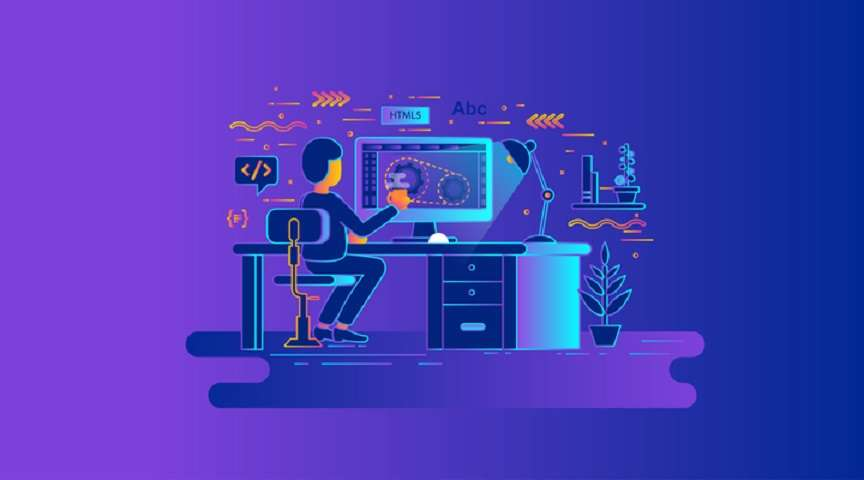

Building a Full Stack Web Application from Scratch
- Post On7.2.2023
- ByFrancisNjuguna
Creating a full stack web application from scratch can be an intimidating task. It requires knowledge of multiple programming languages, frameworks, and technologies. However, with the right guidance and resources, it is possible to build a full stack web application from scratch. In this blog post, we will discuss the steps involved in building a full stack web application from scratch.
The first step in building a full stack web application is to decide on the technology stack you will use. This includes selecting the programming language (e.g., JavaScript, Python), database (e.g., MySQL, MongoDB), and frameworks (e.g., React, Angular). Once you have decided on the technology stack you will use, you can begin setting up your development environment. This includes installing all of the necessary software and libraries needed for your project.
The next step is to create the basic structure of your application. This includes setting up the file structure and creating the necessary files for your project such as HTML files for your frontend and server-side scripts for your backend. You should also create any necessary databases or APIs that will be used by your application.
Once you have set up the basic structure of your application, it’s time to start coding! You should begin by writing code for your frontend using HTML, CSS, and JavaScript (or whatever language you chose). Once you have written code for your frontend, you can move on to writing code for your backend using server-side scripting languages such as PHP or NodeJS (or whatever language you chose). Finally, if necessary, you can write code for any databases or APIs that are needed by your application.
Once all of the code has been written for both the frontend and backend of your application, it’s time to test it out! You should test out all of the features of your application to make sure everything works as expected before deploying it live on a server or hosting platform such as Heroku or AWS EC2 instances.
Finally, once everything has been tested and deployed successfully, it’s time to launch! You should promote your new web application through various channels such as social media or search engine optimization (SEO) so that people can find out about it and start using it!
CONCLUSION
Building a full stack web application from scratch may seem like an intimidating task at first but with some guidance and resources available online it is possible to do so successfully! We hope this blog post has given you some insight into what is involved in building a full stack web application from scratch so that you can get started on creating one yourself!

FRANCIS NJUGUNA
Full Stack Developer
Francis Njuguna is a full stack software developer as well as a technical writer. In this blogs he explains about full stack development according to his knowledge.